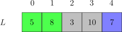
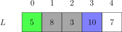

Comedores de Pipoca 2
Imagine que temos uma lista de N inteiros representando a quantidade de pipocas em N sacos dispostos lado a lado. Esses sacos serão consumidos por uma equipe composta por C competidores, em uma competição onde cada competidor pode consumir, no máximo, K pipocas.
Cada competidor deve comer uma sequência contígua de sacos, e cada saco deve ser consumido integralmente por um único competidor.
Regras da competição:
Por exemplo,

Distribuição entre os competidores:
Os três competidores conseguem comer as pipocas de todos os sacos.

Distribuição entre os competidores:
O último saco de pipoca não consegue ser distribuído.
Dado o vetor de inteiros positivos L de tamanho N e o número de competidores C, encontre o menor valor K para que os C competidores comam todas as pipocas de todos os sacos.
Encontre um intervalo de valor mínimo de K e um valor máximo K faça uma busca binária nesse intervalo.